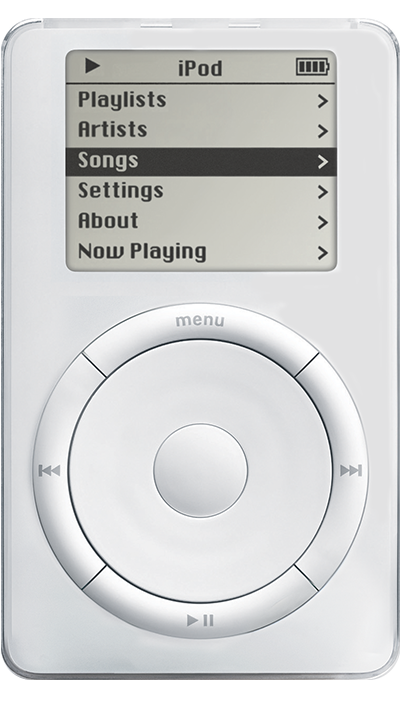
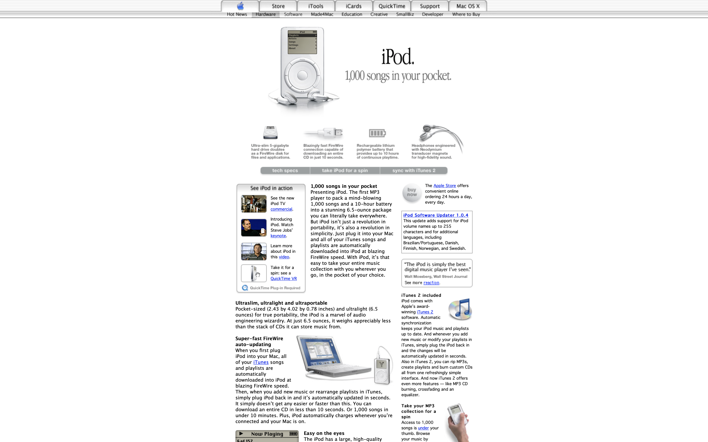

1,000 songs in your pocket
Presenting iPod. The first MP3 player to pack a mind-blowing 1,000 songs and a 10-hour battery into a stunning 6.5-ounce package you can literally take everywhere. But iPod isn’t just a revolution in portability, it’s also a revolution in simplicity. Just plug it into your Mac and all of your iTunes songs and playlists are automatically downloaded into iPod at blazing FireWire speed. With iPod, it’s that easy to take your entire music collection with you wherever you go, in the pocket of your choice.
iPod (Scroll Wheel) models have a scroll wheel that physically turns. The controls (Play, Menu, Next, Previous) are in a circle around the wheel. iPod (Scroll Wheel) models are referred to as first-generation iPod models.
 